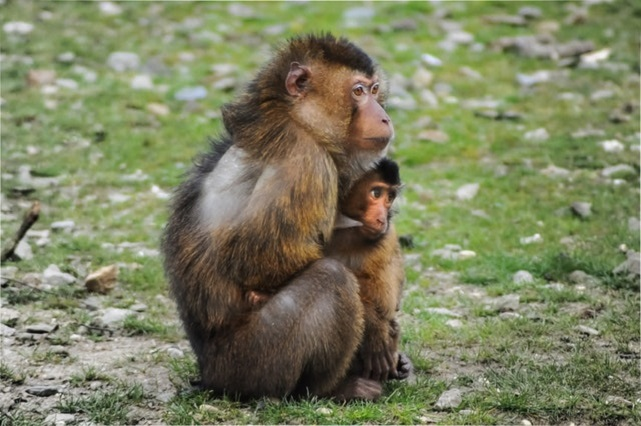
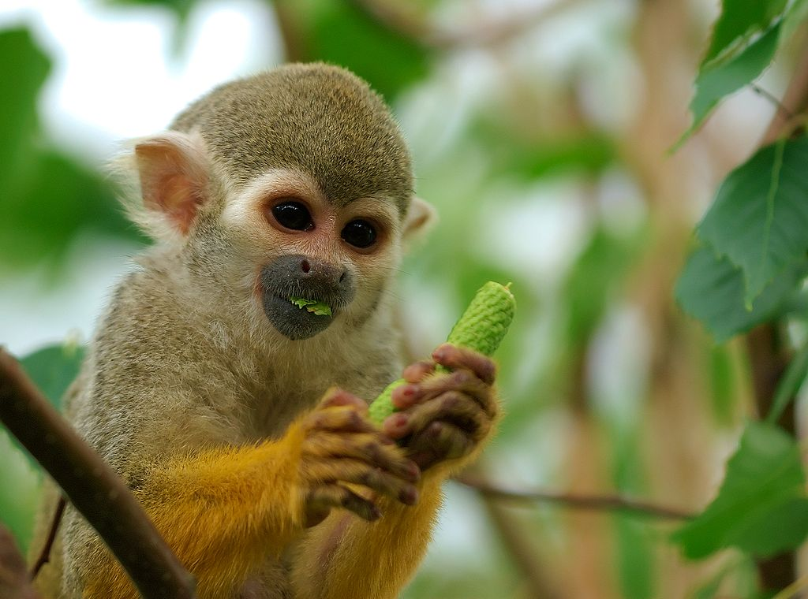

Monkey
Monkey is a common name that may refer to groups or species of mammals, in part, the simians of infraorder Simiiformes. The term is applied descriptively to groups of primates, such as families of New World monkeys and Old World monkeys. Many monkey species are tree-dwelling (arboreal), although there are species that live primarily on the ground, such as baboons. Most species are also active during the day (diurnal). Monkeys are generally considered to be intelligent, especially the Old World monkeys of Catarrhini.
Simians and tarsiers emerged within haplorrhines some 60 million years ago. New World monkeys and catarrhine monkeys emerged within the simians some 35 million years ago. Old World monkeys and Hominoidea emerged within the catarrhine monkeys some 25 million years ago. Extinct basal simians such as Aegyptopithecus or Parapithecus [35-32 million years ago], eosimiidea and sometimes even the Catarrhini group are also considered monkeys by primatologists
Lemurs, lorises, and galagos are not monkeys; instead they are strepsirrhine primates. Like monkeys, tarsiers are haplorhine primates; however, they are also not monkeys.
Apes emerged within "monkeys" as sister of the Cercopithecidae in the Catarrhini, so cladistically they are monkeys as well. There has been some resistance to directly designate apes (and thus humans) as monkeys despite the scientific evidence, so "Old World monkey" may be taken to mean the Cercopithecoidea or the Catarrhini
As apes have emerged in the monkey group as sister of the old world monkeys, characteristics that describe monkeys are generally shared by apes as well. Williams et al outlined evolutionary features, including in stem groupings, contrasted against the other primates such as the tarsiers and the lemuriformes
Monkeys range in size from the pygmy marmoset, which can be as small as 117 millimetres (4.6 in) with a 172-millimetre (6.8 in) tail and just over 100 grams (3.5 oz) in weight,[37] to the male mandrill, almost 1 metre (3.3 ft) long and weighing up to 36 kilograms (79 lb).[38] Some are arboreal (living in trees) while others live on the savanna; diets differ among the various species but may contain any of the following: fruit, leaves, seeds, nuts, flowers, eggs and small animals (including insects and spiders)
The most common monkey species found in animal research are the grivet, the rhesus macaque, and the crab-eating macaque, which are either wild-caught or purpose-bred.[54][55] They are used primarily because of their relative ease of handling, their fast reproductive cycle (compared to apes) and their psychological and physical similarity to humans. Worldwide, it is thought that between 100,000 and 200,000 non-human primates are used in research each year,[55] 64.7% of which are Old World monkeys, and 5.5% New World monkeys.[56] This number makes a very small fraction of all animals used in research.[55] Between 1994 and 2004 the United States has used an average of 54,000 non-human primates, while around 10,000 non-human primates were used in the European Union in 2002.[56]